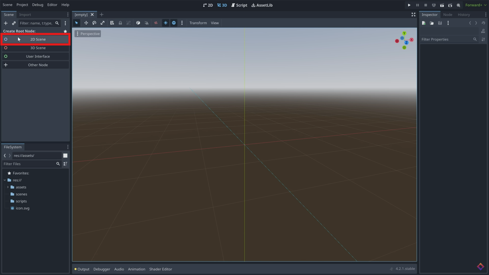
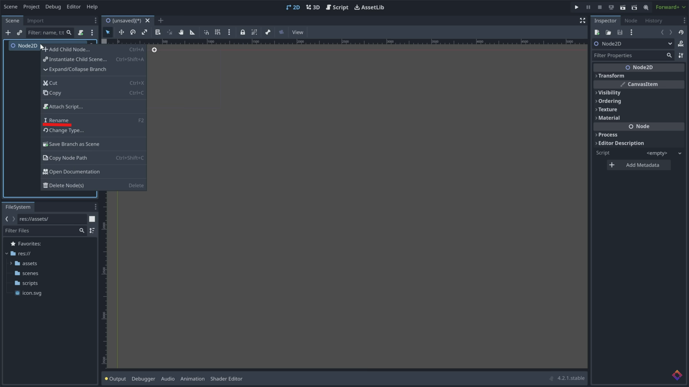

1


Create 2D Scene
Create a 2d Scene, and name it 'Game'. Save the scene to a 'scenes' folder within the project.
Create a 2d Scene, and name it 'Game'. Save the scene to a 'scenes' folder within the project.
Click this button to create a new 'scene'. Add a child node, and search for CharacterBody2D. Click Create at the bottom when you have it selected.
Press CTRL+A to add another node as a child of the Character Body, and search for 'Sprite2D'. Assign it an image in the inspector window to the right. You can download some example assets at https://brackeysgames.itch.io/brackeys-platformer-bundle. If you use this, Use an AnimatedSprite2D instead, and read the 'Animating Objects' section on a guide to set up simple animations. (In this case, an Idle Animation)
Save the scene, name it Player, and head back to your game scene. Simply drag the player scene into this one, and your player will appear.
Back in your player scene, add a script to your root node. For now, use the basic movement template provided by godot. Save the script to a 'scripts' folder.